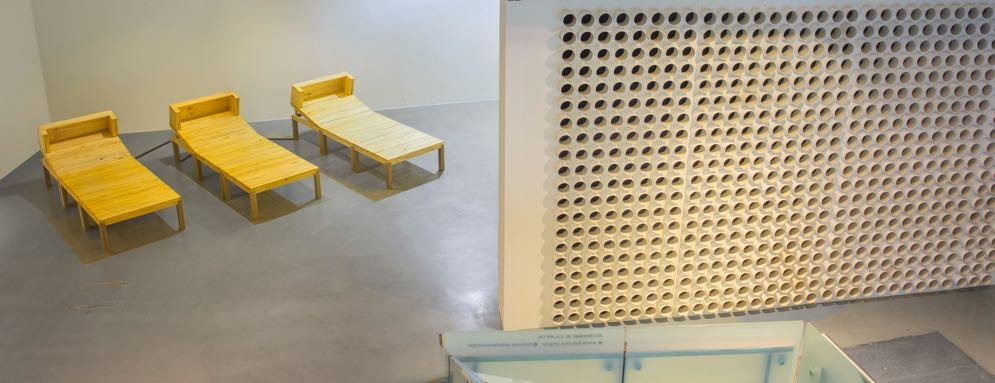
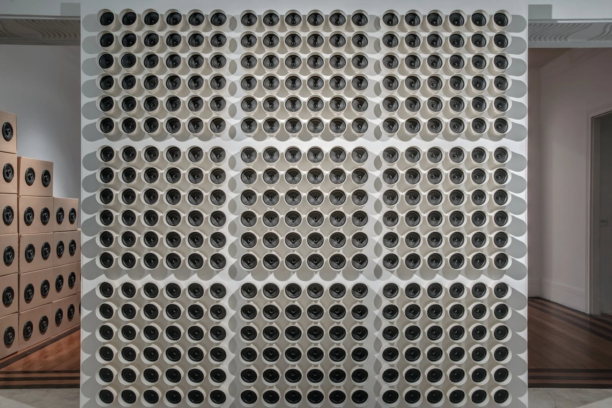
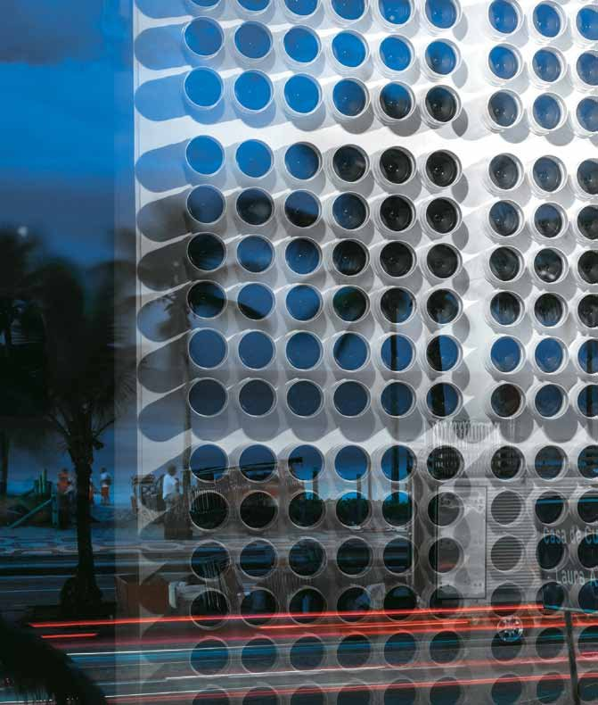

Turbina
Use fones de ouvido




Uma parede de alto-falantes dispostos em grade reproduz o som do mar. Na primeira montagem, na exposição Sonar, a parede estava voltada para a praia de Ipanema: o mar real e sua reprodução se confundiam.
Em 2023, alterada para o espaço da Futuros, Turbina leva as ondas para dentro da galeria, um andar acima das máquinas de Esquina.
- Materiais
- Madeira, tinta acrílica, PVC, áudio do mar
- Dimensões
- 261 × 263 cm (2013); 410 × 285 × 30 cm (2023)
- Local
- Casa de Cultura Laura Alvim (2013); Futuros – Arte e Tecnologia (2023)
- Exposição
- A Pele do Mundo (2023)